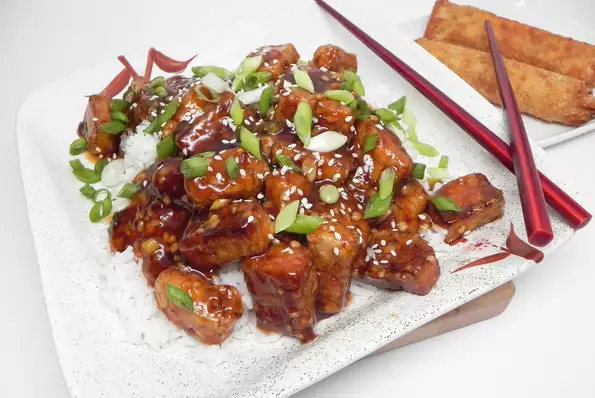

General Tso's Tofu Recipe

Ingredients
Tofu
- 14 oz package extra firm tofu, cut into 1/2 inch cubes
- 2 tablespoons soy sauce
- 1 teaspoon sesame oil
Sauce
- 3 tablespoons soy sauce
- 3 tablespoons maple syrup
- 2 tablespoons sambal oelek
- 1 tablespoon rice vinegar
- 1 tablespoon minced garlic
- 2 teaspoons sesame oil
- 2 teaspoons cornstarch
- 2 medium green onions, chopped
- 5 tablespoons cornstarch
- 3 tablespoons olive oil
Directions
- Place tofu onto a plate lined with several paper towels. Cover
with more paper towels and another plate. Set a 3- to 5-pound
weight on top and press tofu for 30 minutes. Drain and discard
any accumulated liquid.
- Place tofu cubes in a shallow bowl. Add 2 tablespoons soy
sauce and sesame oil. Gently stir to coat. Let sit for 10
minutes or until tofu has absorbed most of the liquid.
- Meanwhile, make the sauce by whisking soy sauce, maple
syrup, sambal oelek, rice vinegar, garlic, sesame oil,
cornstarch, and green onions together in a bowl. Set aside.
- Drain any remaining liquid from the tofu. Place cornstarch
in a gallon-sized plastic resealable bag. Drop tofu cubes
in the bag, seal, and gently shake until coated with cornstarch.
- Heat olive oil in a large skillet over medium-high heat. Cook
tofu for 4 minutes. Flip with tongs and cook until browned on
all sides, about 4 minutes more. Transfer tofu to a plate and
wipe the skillet clean.
- Pour sauce into the skillet and cook until slightly thickened,
about 2 minutes. Remove from heat. Return tofu to the skillet
and toss to combine.